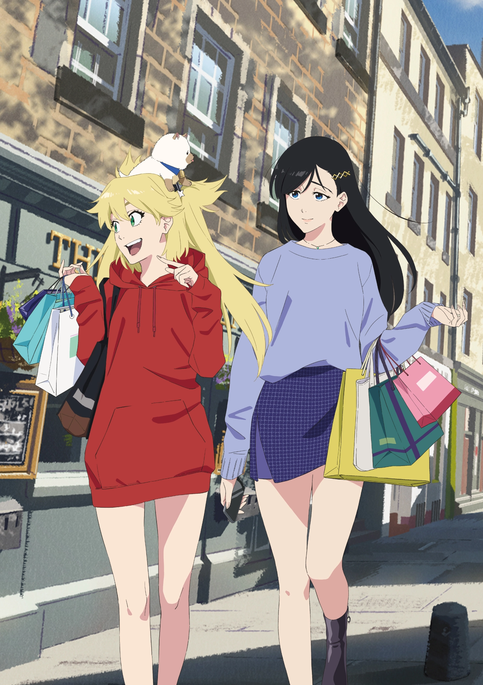

Un reconocido leaker de Weibo informó que la adaptación al anime del manga escrito e ilustrado por Tite Kubo, Burn The Witch, tendrá un nuevo anime secuela que continuará con el proyecto estrenado en la temporada de Otoño-2020 (Octubre-Diciembre). Cabe señalar que la información no está confirmada oficialmente, pero la franquicia tiene un anuncio importante programado para el próximo 28 de mayo a las 20:00 horas (Hora de Japón). Es importante recalcar que esta historia ocurre dentro del universo de BLEACH.
Sinopsis de Burn The Witch
Históricamente, el 72% de las muertes en Londres están relacionadas con dragones, seres fantásticos invisibles para la mayoría de la gente. Aunque desconocidos para la mayoría, algunas personas se han enfrentado a estos dragones. Sólo los habitantes del Londres Reverso que viven en el lado oculto “reverso” de Londres pueden ver a los dragones. Incluso entonces, sólo unos pocos elegidos llegan a estar lo suficientemente cualificados como brujos o magos para entrar en contacto directo con ellos.
La historia se centra en dos brujas, Noel Niihashi y Ninny Spangcole. Ambas trabajan como agentes de protección en Wing Bind (WB), una organización para preservar y administrar los dragones. Su misión es proteger y administrar a los dragones dentro de Londres en nombre de la población.

Por otra parte, Kubo comenzó la publicación del manga en la revista Weekly Shonen Jump de la editorial Shueisha en agosto de 2020 y originalmente había sido anunciado con solo cuatro capítulos. No obstante, una “segunda temporada” de este manga está confirmada, pero no ha revelado una fecha de inicio de publicación hasta el momento.
La obra inspiró una adaptación al anime en formato de OVA, cuyo estreno fue realizado en los cines de Japón en octubre de 2020, y en plataformas de streaming en un formato de tres episodios. La producción corrió a cargo de Studio Colorido bajo la dirección de Tatsurou Kawano y guiones escritos por Chika Suzumura.
Equipo de produccion
- Tatsurou Kawano (Gatchaman Crowds, Yozakura Quartet: Hana no Uta) se encargó de la dirección del primer proyecto en Studio Colorido.
- Chika Suzumura (The Legend of Heroes: Sen no Kiseki – Northern War, Kurage no Shokudou, Yozakura Quartet: Hana no Uta) se encargó de la escritura y supervisión de los guiones.
- Natsuki Yamada (Susume, Karolina., Nakitai Watashi wa Neko wo Kaburu) se encargó del diseño de personajes y de la dirección de animación.
- Keiji Inai (Dungeon ni Deai wo Motomeru no wa Machigatteiru Darou ka?, Maou Gakuin no Futekigousha, Slime Taoshite 300-nen, Shiranai Uchi ni Level MAX ni Nattemashita) se encargó de la composición de la banda sonora.